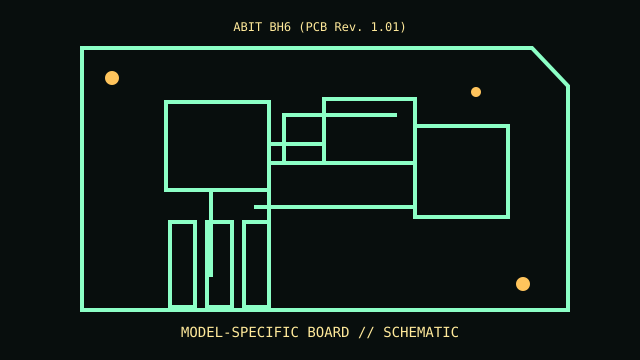

[ MODEL-SPECIFIC COMPONENT // MOTHERBOARDS ]
ABIT BH6 (PCB Rev. 1.01)
A sourced record of one model and its documented revision-specific behavior. Similar model numbers and later board spins are distinct products.

IDENTIFY THE PCB FIRST: Record silkscreen, assembly revision, product suffix and firmware string. Use revision-matched manuals and support lists; verify against the physical board.
Documented specifications
| Exact model / revision | ABIT BH6 (PCB Rev. 1.01) |
|---|---|
| Socket / processor | Slot 1 Pentium II/III and Celeron only as supported by BH6 revision, VRM and BIOS CPU list. |
| Chipset / architecture | Intel 440BX / PIIX4 chipset family. |
| Memory | Three 168-pin SDRAM DIMMs; density and capacity limits follow board manual. |
| Form factor | ATX. |
| I/O / expansion | AGP, PCI, ISA; IDE, floppy, legacy I/O and USB per board manual. |
| Firmware / boot compatibility | Award SoftMenu BIOS; stepping, VRM and BIOS constrain support. |
Compatibility and revision pitfalls
BH6 1.01 differs from other BH6 revisions and BE6. Match PCB marking/manual/BIOS. Coppermine processor use requires compatible VRM and BIOS; never use another model firmware.
Before substitution, check exact CPU/SoC support, minimum BIOS/bootloader, memory population, power connectors and chassis requirements. Matching socket or connector alone does not prove compatibility.
Repair and preservation notes
Record SoftMenu settings; inspect Slot 1, VRM capacitors, DIMM latches and battery corrosion. Preserve BIOS image and test stock clock.
Record provenance, labels, firmware and test conditions. Photograph traces, jumpers and cable routing before repair or cleaning.
Sources & further reading
- ABIT BH6 board/manual archive — motherboard.czArchived board and manual resources; confirm exact revision.
- ABIT BH6 original manual PDFLocate BH6 manual and verify CPU details against revision.
Manufacturer manuals, CPU lists and archived technical references form the basis of this record. Revision-specific documents take precedence over family summaries.